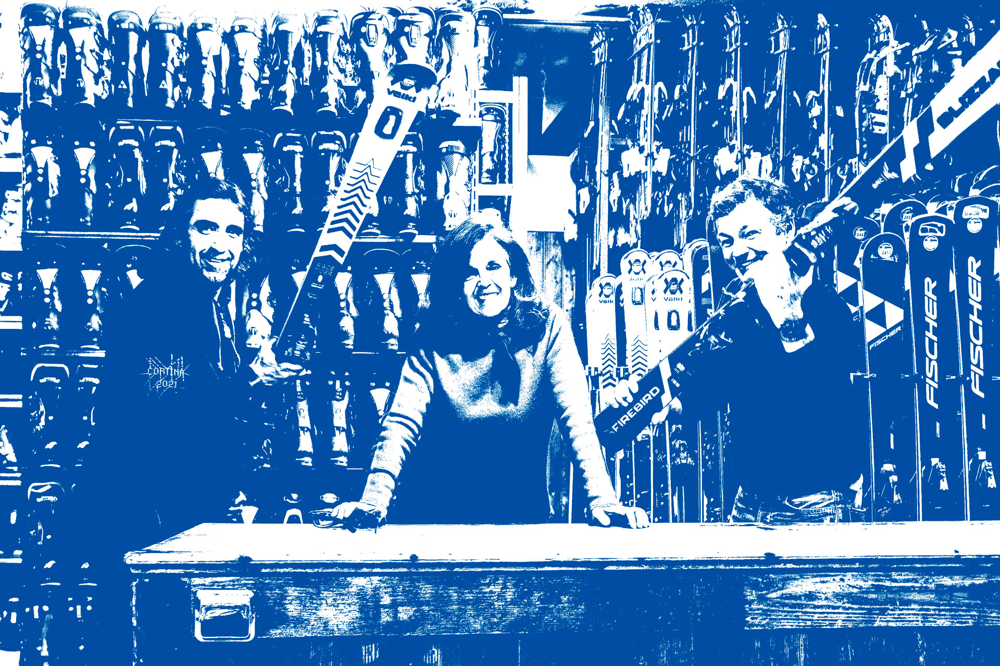
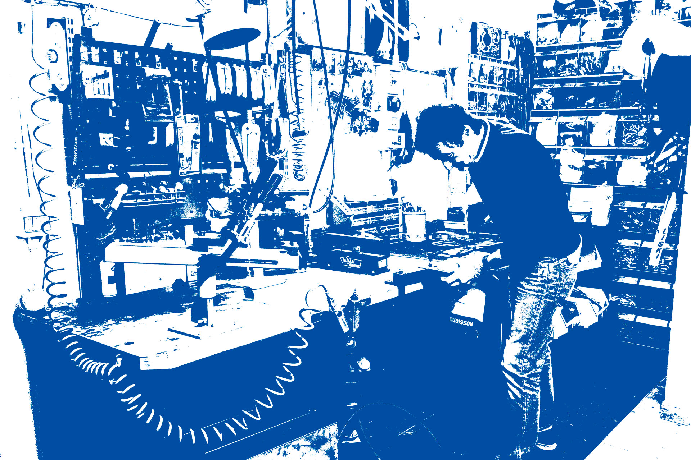
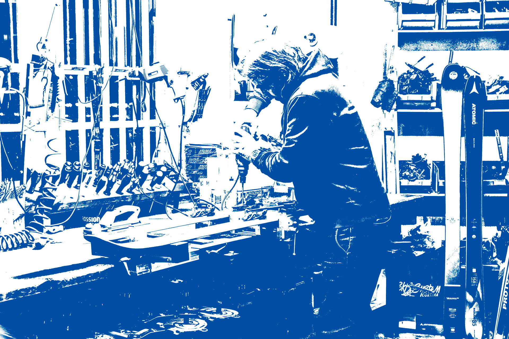
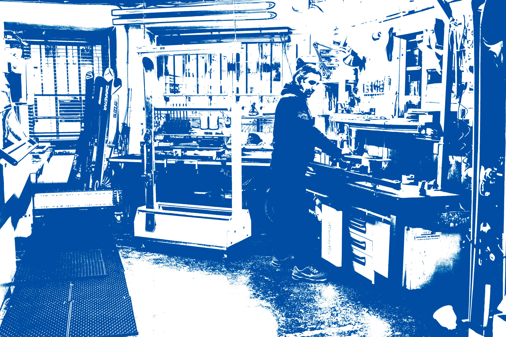

Laboratorio
lab.

Il laboratorio di Ski System nasce nel 1994 a Cortina d’Ampezzo.
L’esperienza maturata in più di un decennio, assieme alla ricerca costante di innovazioni tecnologiche e applicazioni moderne, ci consente oggi di offrire un servizio di elevata professionalità che permette ai nostri clienti di vivere in tutta sicurezza, e con il massimo divertimento, la disciplina dello sci alpino.
Il laboratorio vanta di sistemi robotici di ultima generazione che garantiscono servizi all’avanguardia, a cui si affianca la precisione e la cura artigianale del team Ski System.
Il laboratorio è il cuore pulsante del nostro lavoro, luogo di incontro e di fiducia per i tantissimi clienti che ci hanno accompagnato negli anni e per i tanti nuovi turisti che visitano per le meraviglie delle Dolomiti. Per atleti o principianti, clienti affezionati e turisti, Ski System assicura il migliore dei servizi.
